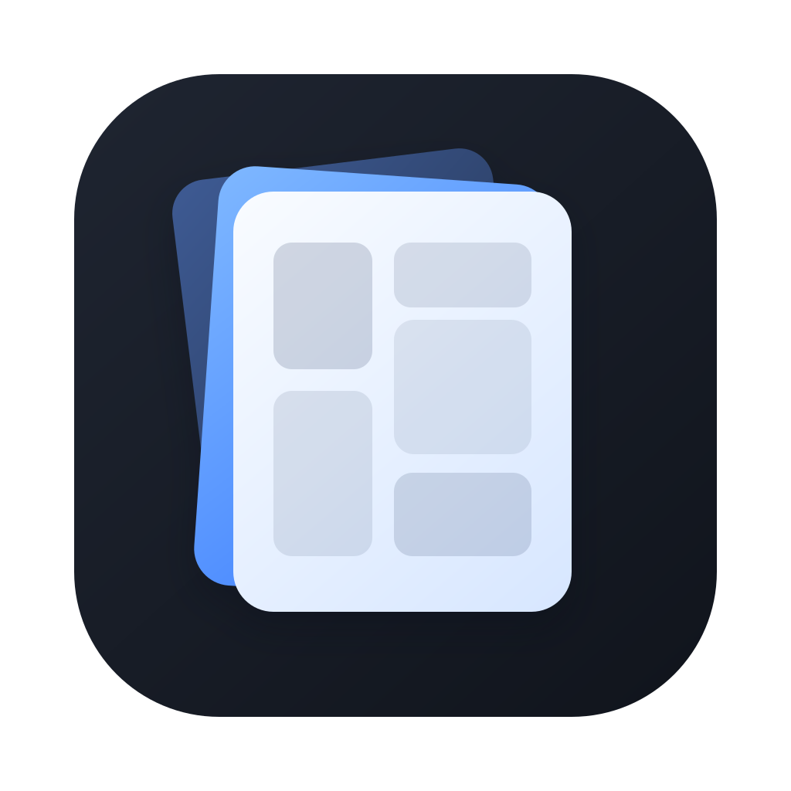

A minimal, fast comic & image viewer for macOS.
macOS를 위한 미니멀하고 빠른 만화 / 이미지 뷰어
Chrome hides when you're reading. The viewer always takes the max space.
Single page, double-page spread, or vertical scroll for webtoons. Cycle with the toolbar or fit-mode shortcuts.
Open a single file, a volume folder, or a series root. Nested archives extract automatically, up to three levels deep.
Every core action has a shortcut. Arrow keys for pages, ⌘G to jump, ⌘D to bookmark, ⌃⌘P for thumbnails.
Lazy windowing in vertical mode loads header-only dimensions up front, then streams pages only where you're looking.
Star books for quick access in the sidebar. Pin individual pages and jump between them with ⌘⇧[ / ⌘⇧].
Per-book page memory survives archive re-extraction. Layout, direction, fit mode, and sidebar state are all persisted.
Right-click any .cbz or .zip → Open With → Panely. Drop a folder onto the app icon to open it directly.
Panely is open source but not notarized by Apple, so Gatekeeper warns on first launch. It’s safe to open — here’s how.
Prefer the terminal? Remove the quarantine flag after moving Panely to /Applications:
xattr -dr com.apple.quarantine /Applications/Panely.appIf you find any issues or have feature requests, please open an issue on GitHub.
The rest live in the menu bar.
Requirements · macOS 14 (Sonoma) or later · Apple silicon & Intel · Sandbox-compliant